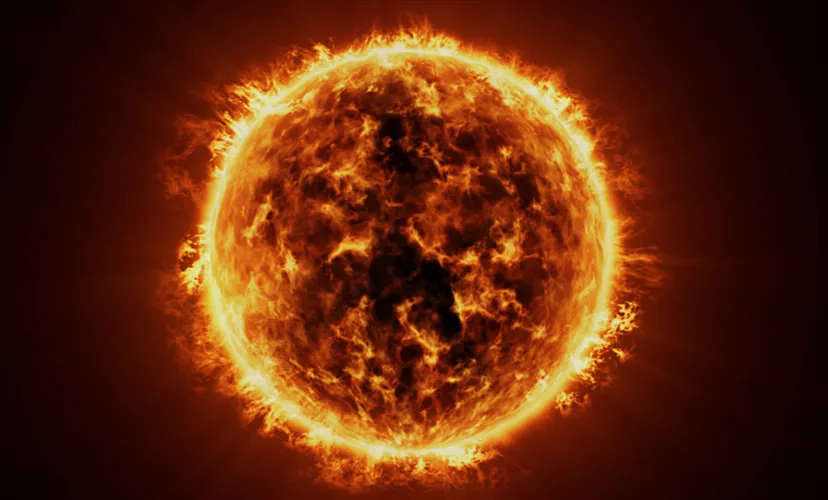
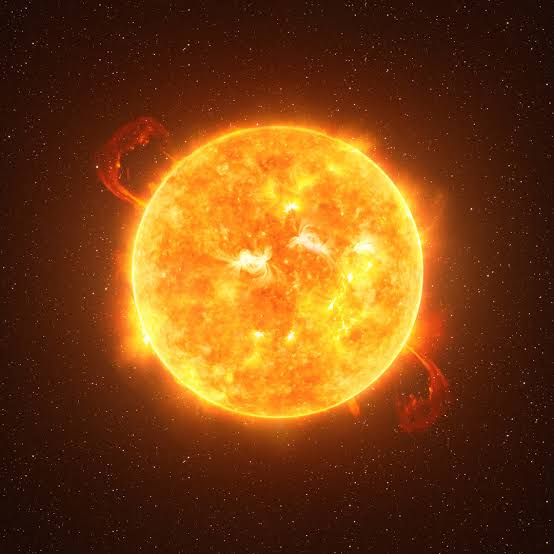
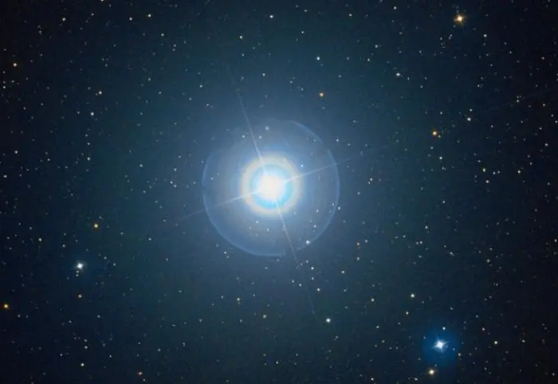
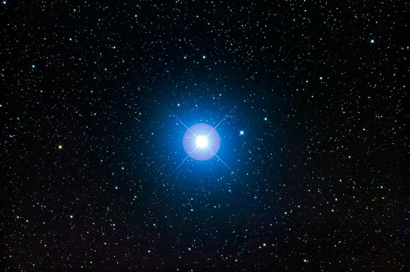
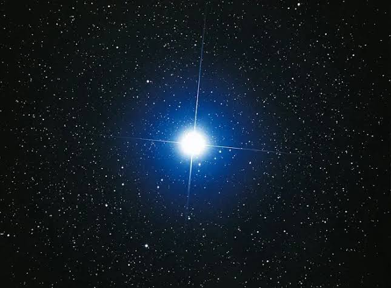

Stars

The sun
The Sun is the star at the center of our Solar System and the source of nearly all energy that supports life on Earth. It is a massive sphere of hot hydrogen and helium gases, with temperatures reaching about 15 million degrees Celsius in its core. Through a process called nuclear fusion, the Sun converts hydrogen into helium, releasing enormous amounts of light and heat. It is approximately 4.6 billion years old and is classified as a G-type main-sequence star. The Sun's gravity holds all planets, asteroids, and comets in orbit, making it the dominant object in our Solar System.

Proxima Cantauri
Proxima Centauri is the nearest known star to Earth after the Sun, located about 4.24 light-years away. It is a small red dwarf star that belongs to the Alpha Centauri star system. Despite its faint appearance, Proxima Centauri has gained worldwide attention because it hosts the exoplanet Proxima Centauri b, a potentially habitable world that may contain conditions suitable for liquid water. Its proximity to Earth makes it one of the most important targets for future interstellar exploration.

Betelgeuse
Betelgeuse is a massive red supergiant star located about 550 light-years from Earth in the constellation Orion. It is one of the largest stars visible to the naked eye and shines with a distinctive reddish glow. Because of its enormous size and advanced age, Betelgeuse is approaching the end of its life and is expected to explode as a spectacular supernova in the distant future. Its size, brightness, and potential fate make it one of the most fascinating stars in the night sky.

Polaris
Polaris, also known as the North Star, is a bright star located in the constellation Ursa Minor. It is positioned almost directly above Earth’s North Pole, making it appear nearly fixed in the night sky while other stars rotate around it. Because of this unique position, Polaris has been used for centuries in navigation to determine the direction of true north. Although it is not the brightest star in the sky, its stability and location make it one of the most important stars for explorers and astronomers.

Rigel
Rigel is a brilliant blue supergiant star located about 860 light-years from Earth in the constellation Orion. It is one of the brightest stars in the night sky and shines with a striking blue-white glow due to its extremely high temperature. Rigel is many times larger and far more luminous than the Sun, producing vast amounts of energy every second. Astronomers believe that it will eventually explode as a supernova, making it one of the most fascinating massive stars known to science.

Sirius
Sirius is the brightest star in the night sky and is located about 8.6 light-years from Earth in the constellation Canis Major. It is a binary star system made up of Sirius A, a bright main-sequence star, and Sirius B, a faint white dwarf. Because of its close distance and high luminosity, Sirius shines more brightly than any other star visible from Earth. It has been known since ancient times and remains one of the most important and recognizable stars in astronomy.